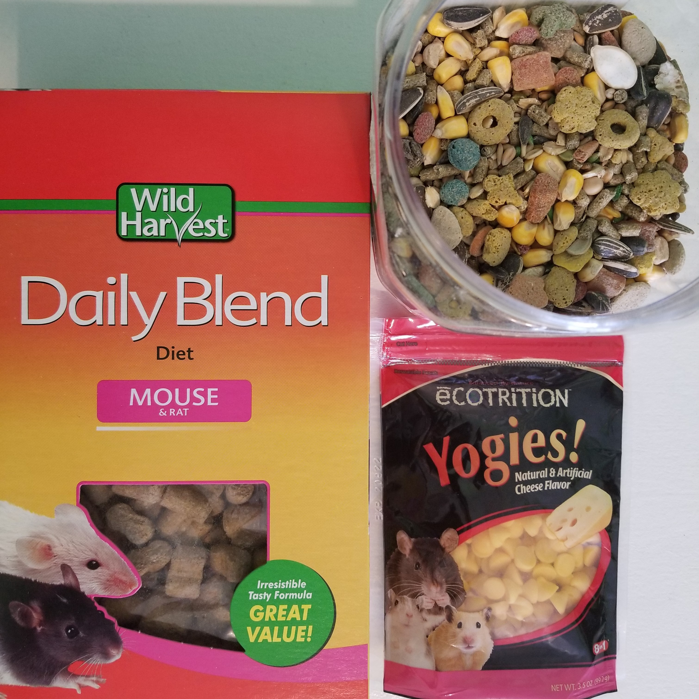
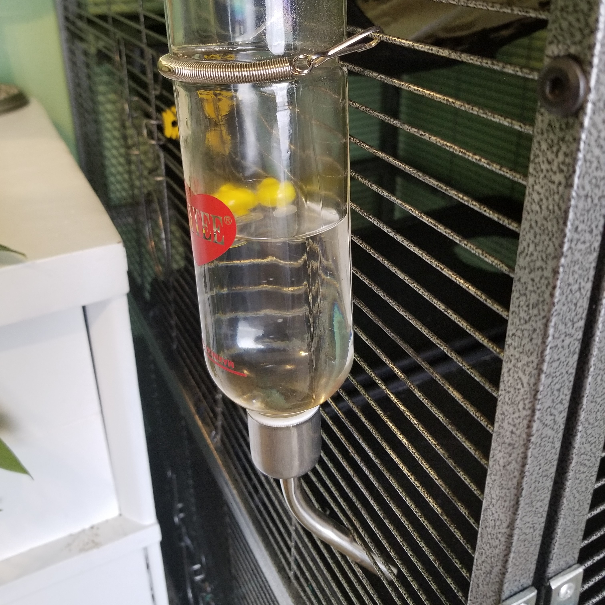
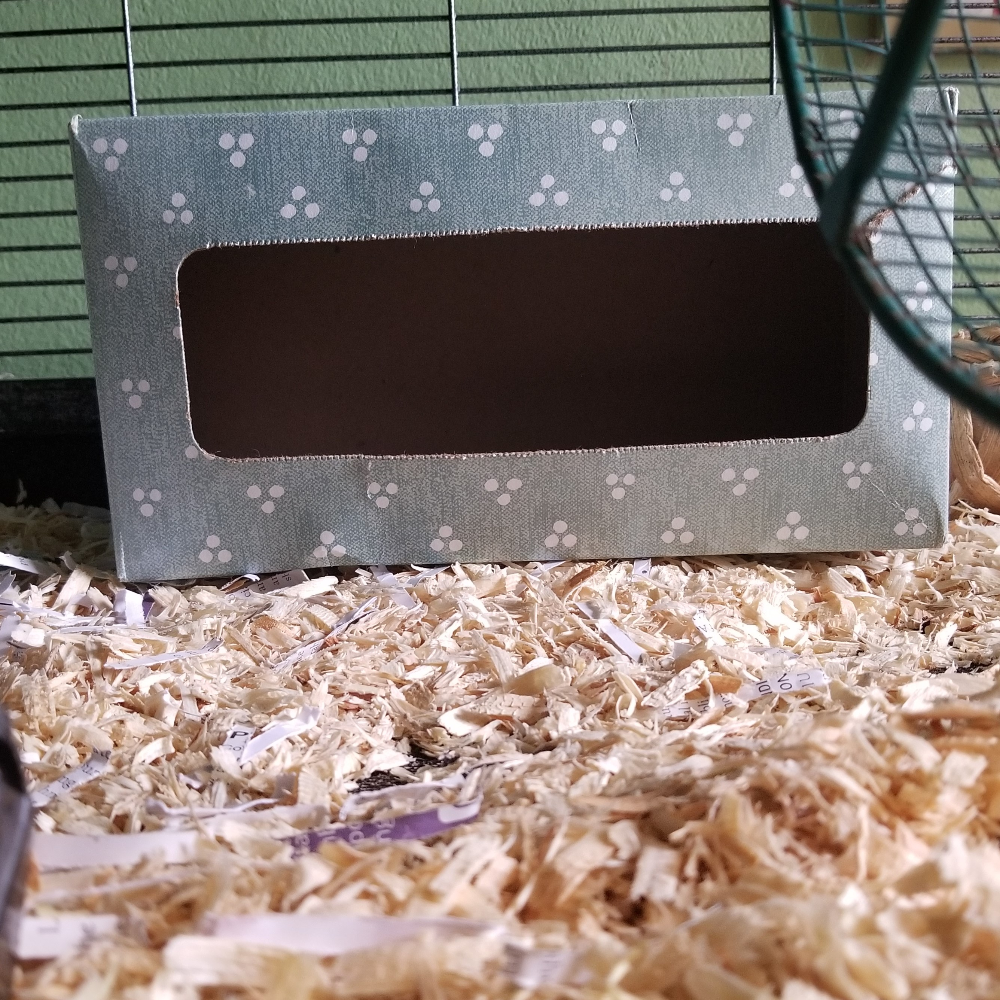
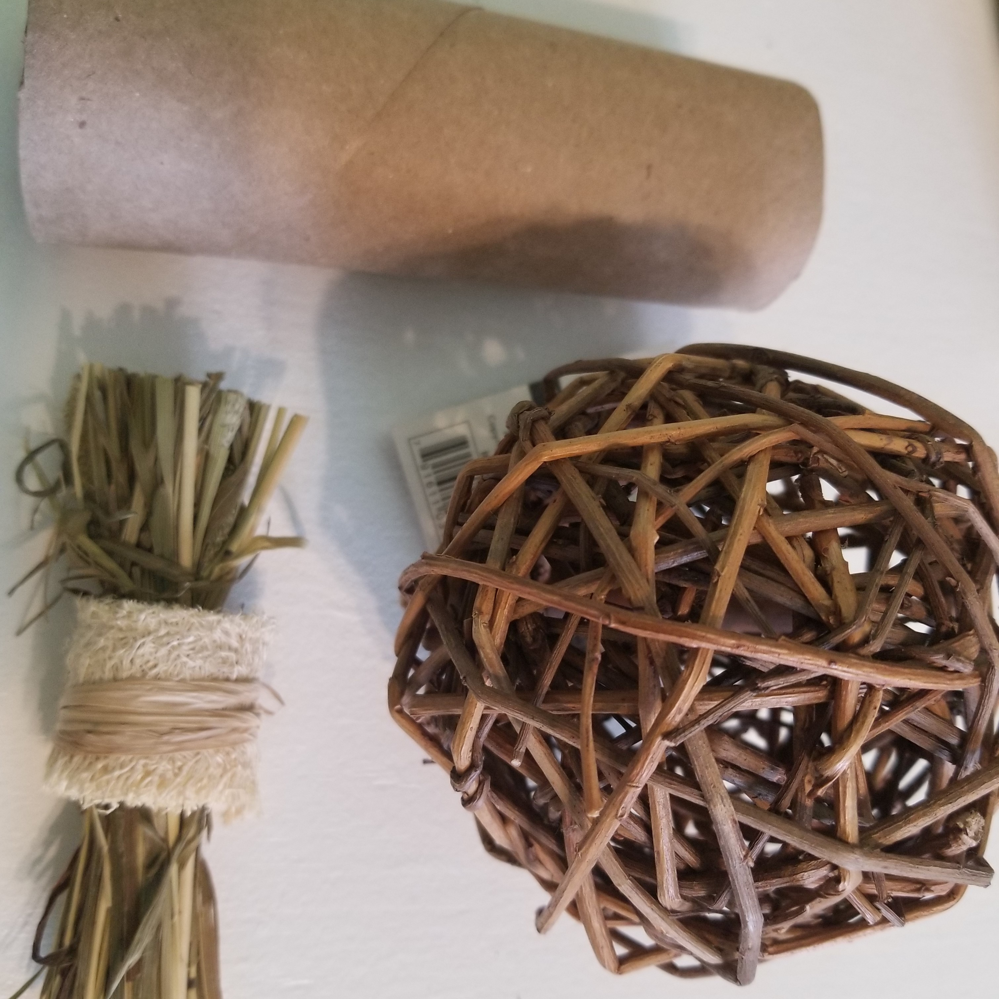
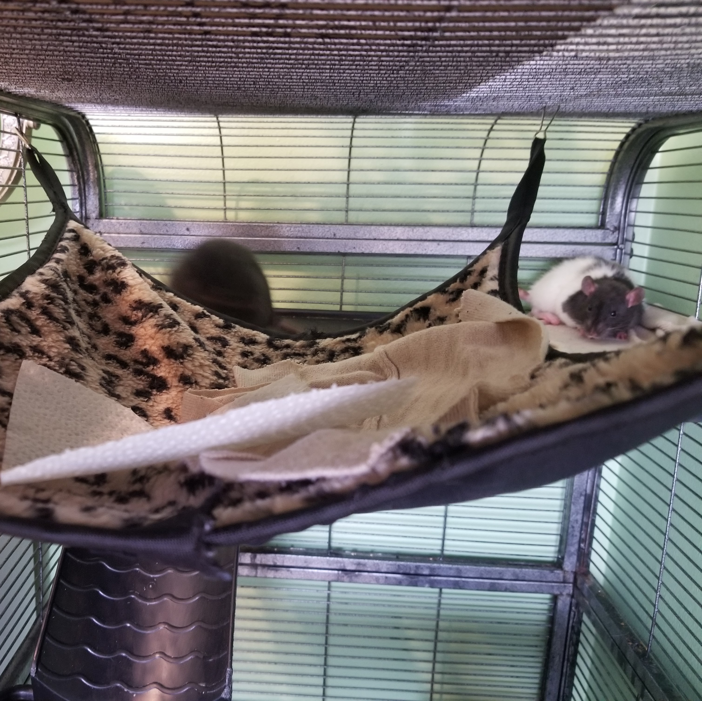
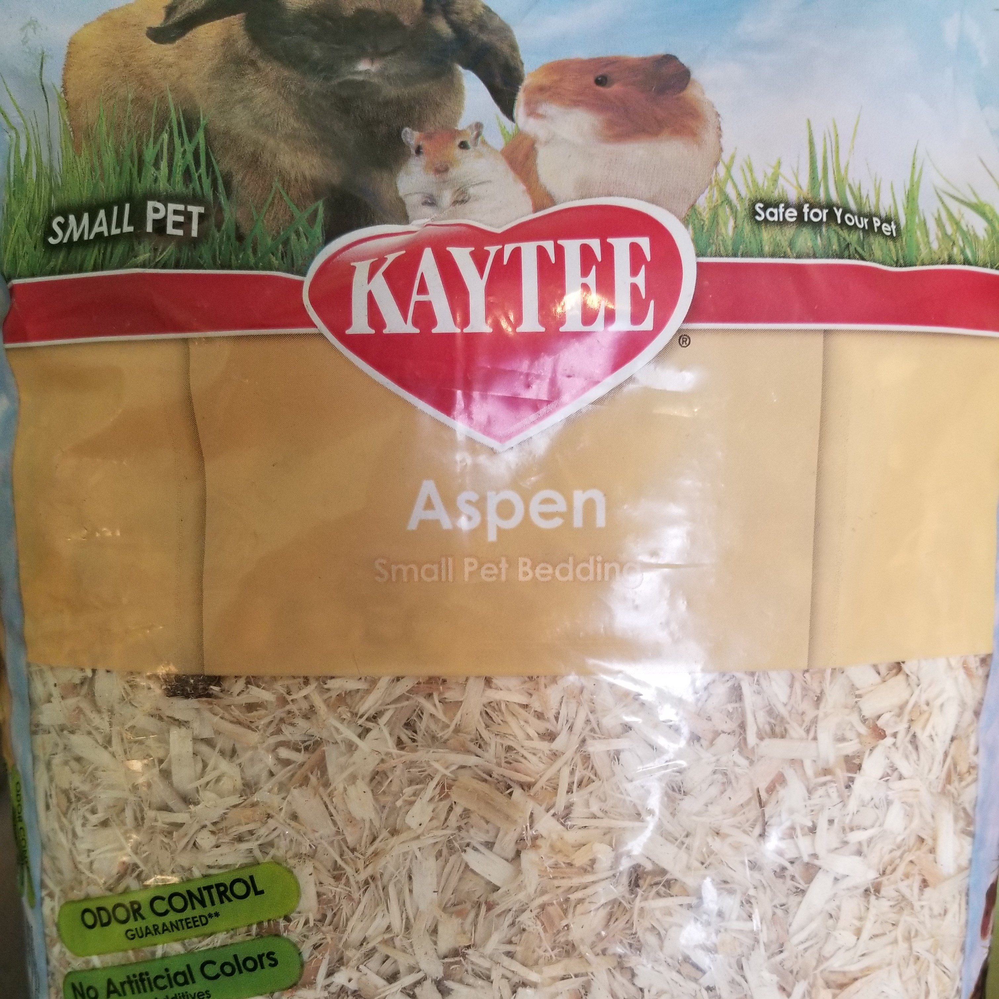

Here are some basic necessities in setting up a home for your pet rats.
Rats need food, water, treats, bedding, a cage and hideouts, chew toys, and comfort
items like hammocks and blankets.
Food and Treat

Rats need food everyday, but can also hoard extra food to eat in the
future. The best treats for rats are fresh human foods like spinach,
apples, and noodles. They can also eat store-bought treats like
yogurt bites.
Water

It is best to change their water every day. A glass water dispenser is
best because it prevents the rats from chewing it, but plastic can
work as well. My water bottle has cute little ducks so I can see the
water level from a distance.
Cage and Hideouts

Rats needs a lot of room to run and play. A cage with wire walls is ideal
for good air circulation and so they can climb. Inside the cage, they
should also have different places to hide and sleep. They need to feel
secure and comfortable. I use tissue boxes and similar items.
Chew Toys

Rat's teeth grow their entire lives. It is important they have an
abundance of things to chew on to help keep their teeth at a helathy
length. Store-bought items work such as wooden ball chew toys but things
like toilet paper rolls are also a good adition.
Comfort Items

A hammock provides a nice alternative location for rats to rest. Fabric
is the best material, but make sure you wash it. Putting pieces of
cloth around the cage is a nice addition of bedding material for them.
Bedding

There are paper-based and wood-based beddings. I prefer wood-based
because it keeps any potential odors to a minimum. However, wood
beddings can irritate rat lungs if it's too fragrant or dusty. I
prefer aspen as it has the lowest amount of dust and has no oder. Pine
can also work, but stop use if rats sneeze too much.